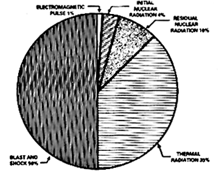
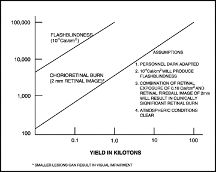
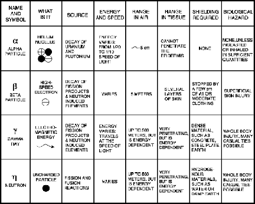

CHAPTER 2
NUCLEAR, BIOLOGICAL, AND CHEMICAL WEAPONS EFFECTS
Nuclear weapons are the most destructive weapons available for use on the battlefield today. Biological agents are easy to disperse on the battlefield without immediate detection; however, their effects on exposed troops can change the course of the battle. As more nations enter the arena of developing biological and chemical weapons, their potential effects on our troops will increase. Biological and chemical weapons/agents may be employed by terrorists, or in any level of conflict (low-, mid-, or high-intensity). Consideration of both the physical and biological effects of these weapons is required for HSS operations.
2-2. Physical Effects of Nuclear Weapons
a. The principal physical effects of nuclear weapons are blast, thermal radiation (heat), and nuclear radiation. These effects are dependent upon the yield (or size) of the weapon expressed in kilotons (KT), physical design of the weapon (such as conventional and enhanced), and upon the method of employment. For a low altitude detonation of a moderate-sized (3 to 10 KT) weapon, the energy is distributed (Figure 2-1) as follows:
(1) Fifty percent as blast.
(2) Thirty-five percent as thermal radiation; made up of a wide spectrum of electromagnetic radiation, including infrared, visible, and ultraviolet light and some soft x-ray radiation.
(3) Fourteen percent as nuclear radiation, 4 percent as initial ionizing radiation composed of neutrons and gamma rays emitted within the first minute after detonation, and 10 percent as residual nuclear radiation (fallout).
Figure 2-1. Distribution of energy.

(4) One percent as EMP.
b. Larger weapons are more destructive than smaller weapons, but the destructive effect is not linear. Table 2-1 presents a comparison of three aspects of nuclear weapons effects with yield.
Table 2-1. Comparison of Weapons Effects (Radii of Effects in Kilometers:Airburst)

c. The effects of blast, heat, and nuclear radiation are also determined by the altitude at which the weapon is detonated. Nuclear blasts are classified as air, surface, or subsurface bursts.
(1) An airburst is a detonation in air at an altitude below 30,000 meters, but high enough so that the fireball does not touch the surface of the earth. The altitude is varied to obtain the desired tactical effects. Initial radiation will be a significant hazard, but there is essentially no local fallout. The ground immediately below the airburst may have a small area of neutron-induced radioactivity. This may pose a hazard to troops passing through the area.
(2) A surface burst is a detonation in which the fireball actually touches the land or water surface. In this case, the area affected by blast, thermal radiation, and initial nuclear radiation will be smaller than for an airburst of comparable yield; however, in the region around ground zero, the destruction will be much greater and a crater is often produced. Additionally, a significant amount of fallout is created and can be a hazard downwind.
(3) A subsurface burst is an explosion in which the detonation is below the surface of land or water. Cratering usually results. If the burst does not penetrate the surface, the only hazard is from the ground or water shock. If the burst penetrates the surface, blast, thermal, and initial nuclear radiation will be present, though less than for a surface burst of comparable yield. Local fallout will be heavy over a small area.
2-3. Physiological Effects of Nuclear Weapons
The physiological effects of nuclear weapons result from: direct physical effects from the blast; the thermal radiation; the ionizing radiation (initial or residual); or a combination of these. For smaller weapons (less than 10 KT), ionizing radiation is the primary creator of casualties requiring medical care, while for larger weapons (greater than 10 KT), thermal radiation is the primary cause of injury.
a. The rapid compression and decompression of blast waves on the human body results in transmission of pressure waves through the tissues. Resulting damage is primarily at junctions between tissues of different densities (bone and muscle), or at the interface between tissue and airspace. Lung tissue and the gastrointestinal system (both contain air) are particularly susceptible to injury. The tissue disruptions can lead to severe hemorrhage or to air embolism; either can be rapidly fatal. Direct overpressure effects do not extend out as far from the point of detonation and are often masked by the drag force effects. A typical range of probability of lethality, with variation in overpressure for a 1 KT weapon, is shown in Table 2-2.
Table 2-2. Range of Lethality of Peak Overpressures
| LETHALITY (APPROXIMATE %) | PEAK OVEREXPOSURE (ATMOSPHERES) | DISTANCE FROM GROUND ZERO; METERS |
| 1 | 2.3 - 2.9 | 150 |
| 50 | 2.9 - 4.1 | 123 |
| 100 | 4.1 + | 110 |
(1) The significance of the data is that the human body is relatively resistant to static overpressure compared to rigid structures such as buildings. For example, an unreinforced cinder block panel will shatter at 0.1 to 0.2 atmospheres.
(2) Overpressures lower than those in Table 2-2 can cause nonlethal injuries such as lung damage and eardrum rupture. Lung damage is a relatively serious injury, usually requiring hospitalization, even if not fatal; whereas eardrum rupture is a minor injury, often requiring no treatment at all.
(a) The threshold level of overpressure for an unreinforced, unreflected blast wave which can cause lung damage is about 1.0 atmosphere.
(b) The threshold level for eardrum rupture is around 0.2 atmospheres; the overpressure associated with a 50 percent probability of eardrum rupture is about 1.1 atmospheres.
(3) Casualties requiring medical treatment from direct blast effects are produced by overpressures between 1.0 and 3.5 atmospheres. However, other effects (such as indirect blast injuries and thermal injuries) are so predominate that patients with only direct blast injuries make up a small part of the patient work load.
b. The drag forces (indirect blast) of the blast winds are proportional to the velocities and duration of the winds. The winds are relatively short in duration, but can reach velocities of several hundred kilometers (km) per hour. Injury can result either from missiles impacting on the body, or from the physical displacement of the body against objects and structures.
(1) The distance from the point of detonation at which severe indirect injury occurs is greater than that for equally serious direct blast injuries. A high probability of serious indirect injury can occur when the peak overpressure is about 0.2 atmospheres. This range will increase with the increased size of the weapon; for a 1 KT weapon the range is 0.22 km, whereas for a 20 KT weapon, the range is 0.76 km. Injuries will occur and casualties will be generated at greater ranges, but not consistently.
(2) The drag forces of the blast winds produced by a nuclear detonation are so great that almost any form of vegetation or structure will be broken up or fragmented into missiles. Thus, multiple, varied missile injuries will be common, increasing their overall severity and significance. Table 2-3 lists ranges at which significant missile injuries can be expected.
Table 2-3. Ranges for Probabilities of Injury from Small Missiles
| ELD (KT) | 1% PROBABILITY OF SERIOUS INJURY | RANGES (KM) 50% PROBABILITY OF SERIOUS INJURY | 99% PROBABILITY OF SERIOUS INJURY |
| 1 | 0.28 | 0.22 | 0.17 |
| 10 | 0.73 | 0.57 | 0.44 |
| 20 | 0.98 | 0.76 | 0.58 |
| 50 | 1.4 | 1.1 | 0.84 |
| 100 | 1.9 | 1.5 | 1.1 |
| 200 | 2.5 | 1.9 | 1.5 |
| 500 | 3.6 | 2.7 | 2.1 |
| 1000 | 4.8 | 3.6 | 2.7 |
| 1 Incidence of injury based on incidence of perforation of skin and tissue | |||
| 2 Missiles used were 10 gram (gm) in weight. |
(3) The velocity to which missiles are accelerated is the major factor in causing injury. The probability of a penetration injury increases with increasing velocity, particularly for small, sharp missiles such as glass fragments. Small, light objects are accelerated to speeds approaching the maximum (wind) velocity. Table 2-4 shows data for probability of penetration related to size and velocity of glass fragments.
Table 2-4. Probability of Penetration of Glass Fragments into Abdominal Cavity
| Mass of Glass Fragments (GM) | 1% | 50% | 99% | |
| Impact Velocity (Meters per Second) | ||||
| 0.1 | 78 | 136 | 243 | |
| 0.6 | 53 | 91 | 161 | |
| 1 | 46 | 82 | 143 | |
| 10 | 38 | 60 | 118 |
(4) Heavy, blunt missiles may not penetrate, but can result in significant injury, particularly fractures. The threshold velocity for skull fractures from a 4.5 milligram (mg) missile is about 4.6 meters/second.
(5) The drag forces of the blast winds are strong enough to displace even large objects (such as vehicles), or to cause the collapse of large structures (such as buildings) resulting in serious crushing injuries. Man himself can become a missile. The resulting injuries sustained are called translational injuries. The velocity at which the body is displaced will determine the probability and the severity of injury. Assuming a displacement of 3.0 meters, the impact velocity associated with various degrees of injury is shown in Table 2-5. The velocities in Table 2-5 can be correlated against yield. The ranges at which such velocities would be found are given in Table 2-6.
Table 2-5. Translational Injuries
| A. BLUNT INJURIES AND FRACTURES | |
| PROBABILITY OF INJURY | VELOCITY (M/SEC) |
| 1% | 2.6 |
| 50% | 6.6 |
| 99% | 16.5 |
| B. FATAL INJURIES | |
| PROBABILITY OF FATALITY | VELOCITY (M/SEC) |
| 1% | 6.6 |
| 50% | 17 |
| 99% | 39.7 |
Table 2-6. Ranges for Selected Impact Velocities of a 70 Kilogram Human Body Displaced by Blast Wind Drag Forces for Different Yield Weapons
| WEAPON YIELD (KT) | VELOCITIES (m/sec) | ||
| 2.6 | 6.6 | 17 | |
| RANGES (km) | |||
| 1 | 0.38 | 0.27 | 0.19 |
| 10 | 1 | 0.75 | 0.53 |
| 20 | 1.3 | 0.99 | 0.71 |
| 50 | 1.9 | 1.4 | 1 |
| 100 | 2.5 | 1.9 | 1.4 |
| 200 | 3.2 | 2.5 | 1.9 |
| 500 | 4.6 | 3.6 | 2.7 |
| 1000 | 5.9 | 4.8 | 3.6 |
2-4. Biological Effects of Thermal Radiation
The thermal radiation emitted by a nuclear detonation causes burns in two waysãby direct absorption of the thermal energy through exposed surfaces (flash burns); or by the indirect action of fires in the environment (flame burns). Indirect flame burns can easily outnumber all other types of injury.
a. Thermal radiation travels outward from the fireball in a straight line; therefore, the amount of energy available to cause flash burns decreases rapidly with distance. Close to the fireball all objects will be incinerated. The range for 100 percent lethality will vary with yield, height of burst, weather, environment, and immediacy of treatment. The critical factors determining the degree of burn injury are the flux (calories per square centimeter [cal/cm2]) and the duration of the thermal pulse. The amount of thermal radiation needed to cause a flash second-degree burn on exposed skin will vary with the yield of the weapon and the nature of the pulse (Table 2-7).
NOTE:
The battle-dress uniform, mission-oriented protective posture (MOPP) gear, or any other clothing will provide additional protection against flash burns. The airspaces between the clothing significantly impede heat transfer and may prevent or reduce the severity of burns, depending on the magnitude of the thermal flux.
Table 2-7. Factors for Determining the Probability of Second-Degree Burns
| YIELD OF WEAPON | 1 KT | 10 KT | 100 KT | 1 MT | 10 MT |
| Range (km) for production of second-degree burns on exposed skin | 0.78 | 2.1 | 4.8 | 9.1 | 14.5 |
| Duration of thermal pulse in seconds | 0.12 | 0.32 | 0.9 | 2.4 | 6.4 |
| Cal/cm2 required to produce second-degree burns on exposed skin | 4 | 4.5 | 5.3 | 6.3 | 7 |
b. Indirect (flame) burns result from exposure to fires caused by the thermal effects in the environment, particularly from ignition of clothing. The larger-yield weapons are more likely to cause fire storms over extensive areas. There are too many variables in the environment to predict either incidence or severity of casualties. Expect the burns to be far less uniform (in degree) and not limited to exposed surfaces. For example, the respiratory system may be exposed to the effects of hot gases produced by extensive fires. Respiratory system burns cause high morbidity and high mortality rates.
c. The initial thermal pulse can cause eye injuries in the forms of flash blindness and retinal scarring. Flash blindness is caused by the initial brilliant flash of light produced by the nuclear detonation. This flash swamps the retina, bleaching out the visual pigments and producing temporary blindness. During daylight hours, this temporary effect may last for about 2 minutes. At night, with the pupil dilated for dark adaptation, flash blindness will affect personnel at greater ranges and for greater durations. Partial recovery can be expected in 3 to 10 minutes, though it may require 15 to 35 minutes for full night adaptation recovery. Retinal scarring is the permanent damage from a retinal burn. It will occur only when the fireball is actually in the individual¼s field of view and should be a relatively uncommon injury. The location of the scar will determine the degree of interference with vision. Figure 2-2 presents the threshold distance for minimal eye injuries.
2-5. Physiological Effects of Ionizing Radiation
A nuclear burst results in four types of ionizing radiation: neutrons, gamma rays, beta, and alpha radiation. The initial burst is characterized by neutrons and gamma rays while the residual radiation is primarily alpha, beta, and gamma rays. The effect of radiation on a living organism varies greatly by the type of radiation the organism is exposed to. See Table 2-8 for characteristics of nuclear radiation.
a. Alpha particles are extremely massive charged particles (four times the mass of a neutron); they are a fallout hazard. Because of their size, alpha particles cannot travel far and are fully stopped by the dead layers of the skin or by the uniform. Alpha particles are a negligible external hazard, but if inhaled or ingested, can cause significant internal damage.
Figure 2-2. Threshold distance for minimal chorioretinal burn and flash blindness versus yield (airburst) at night.

Table 2-8. Characteristics of Nuclear Radiation

b. Beta particles are very light, charged particles that are found primarily in fallout radiation. These particles can travel a short distance in tissue; if large quantities are involved, they can produce damage to the basal stratum of the skin. The lesion produced is similar to a thermal burn (called a beta burn).
c. Gamma rays, emitted during the nuclear detonation and in fallout, are uncharged radiation similar to X rays. They are highly energetic and pass through matter easily. Because of its high penetrability, radiation can be distributed throughout the body, resulting in whole body exposure.
d. Neutrons, like gamma rays, are uncharged, are only emitted during the nuclear detonation, and are not a fallout hazard. However, neutrons have significant mass and interact with the nuclei of atoms, severely disrupting atomic structures. Compared to gamma rays, they can cause 20 times more damage to tissue.
e. When radiation interacts with atoms, energy is deposited resulting in ionization (electron excitation). This ionization may involve certain critical molecules or structures in a cell, producing its characteristic damage. Two modes of action in the cell are direct and indirect action. The radiation may directly hit a particularly sensitive atom or molecule in the cell. The damage from this is irreparable; the cell either dies or is caused to malfunction. The radiation can also damage a cell indirectly by interacting with water molecules in the body. The energy deposited in the water leads to the creation of toxic molecules; the damage is transferred to and affects sensitive molecules through this toxicity.
f. The two most radiosensitive organ systems in the body are the hematopoietic and the gastrointestinal systems. The relative sensitivity of an organ to direct radiation injury depends upon its component tissue sensitivities. Cellular effects of radiation, whether due to direct or indirect damage, are basically the same for the different kinds and doses of radiation. The simplest effect is cell death. With this effect, the cell is no longer present to reproduce and perform its primary function. Changes in cellular function can occur at lower radiation doses than those which cause cell death. Changes can include delays in phases of the mitotic cycle, disrupted cell growth, permeability changes, and changes in motility. In general, actively dividing cells are most sensitive to radiation. Additionally, radiosensitivity tends to vary inversely with the degree of differentiation of the cell.
g. Predicting radiation effects is difficult because often it is unknown which organ was exposed. Thus, most predictions are based on whole body irradiation. Partial body and specific organ irradiation can also occur; particularly from fallout particles or internal deposits. Depending upon the organ system, the irradiation can be severe. The severe radiation sickness resulting from external, whole body irradiation and its consequent organ effects, is a primary medical concern. The median lethal dose of radiation which will kill 50 percent of the exposed persons within a period of 60 days, without medical intervention (designated as LD50/60), is approximately 450 centigray (cGy).
h. Recovery of a particular cell system is possible if a sufficient fraction of a given stem cell population remains after radiation injury. Complete recovery may appear to occur; however, it is possible for late somatic effects to have a higher probability of occurring because of the radiation damage.
2-6. Effects of Biological Weapons
Biological warfare is the intentional use, by an enemy, of live agents or toxins to cause death and disease among personnel, animals, and plants, or to deteriorate materiel.
a. Live Agents.
(1) Live agents are living organisms like viruses, bacteria, and fungi. They can be delivered directly (artillery or aircraft spray), or through a vector such as a flea or tick. Modern technology has eliminated some unpredictable aspects of live agent use, making weaponization more likely.
(2) For some agents, only a few organisms are needed to cause infection, especially when inhaled. Live agents are small and light; they can be spread great distances by the wind and can float into unfiltered or nonairtight places.
(3) Live agents require time after they are ingested to multiply enough to overcome the body's defenses. This incubation period may vary from hours to days or weeks depending on the type of organism. Thus, to be effective, a live agent attack would need to be launched well in advance of a tactical assault.
(4) These agents also have life cycles in which to grow, reproduce, age, and die. While they live, these agents usually require protection and nutrition supplied by another living organism (the host) to survive and grow. Weathering (wind, rain, and sunlight) rapidly reduces their numbers. Some bacterial agents produce spores that can form protective coats and survive longer. However, the hazard from most live agents may only last for one day.
(5) Live agents are not detectable by any of the five physical senses; usually the first indication of a biological attack is the ill soldier. The diseases caused by live agents may be difficult to control because they are often easily spread from soldier to soldier, directly or indirectly.
(6) Because of their incubation period and life cycle, likely areas for live agent use are in the combat service support (CSS) area. But attacks in the forward areas cannot be ruled out.
b. Toxins.
(1) Toxins are by-products (poisons) produced by plants, animals, or microorganisms. It is the poisons that harm man, not the organisms which make the toxins. In the past, the only way to deliver toxins on a large scale was by using the organism. With today¼s technology large quantities of many toxins can be produced; thus, they can be delivered without the accompanying organism.
(2) Toxins have several desirable traits. They are poisonous compounds that do not grow, reproduce, or die after they have been dispersed; they are more easily controlled than live organisms. Field monitors capable of providing prompt warning of a toxin attack are not available; therefore, soldiers must learn to quickly recognize signs of attack, such as observing unexplained symptoms of victims. Toxins produce effects similar to those caused by chemical agents; however, the victims will not respond to the first aid measures that work against chemical agents. Unlike live agents, toxins can penetrate the unbroken skin; when mixed with a skin penetrant such as dimethyl sulfoxide, their speed of penetration is increased. Because the effects on the body are direct, the symptoms of an attack may appear very rapidly. The potency of most toxins are such that very small doses will cause injuries and/or death. Thus, their use by an enemy may be an alternative to chemical agents because it allows the use of fewer resources to cover the same or a larger area. Slight exposure at the edges of an attack area may produce severe symptoms or death from exposure to toxins because of their extreme toxicity. Lethal or injury downwind hazard zones for toxins may be far greater than those of CW agents.
2-7. Behavior of Biological Weapons
Biological agents can be disseminated in a spectrum of physical states. They may be living microorganisms or spore forms of the organism. See Table 2-9 for stability of various biological agents. They may be spread by:
- Arthropods.
- Contact with infected animals.
- Contamination of food and water.
- Aerosol, liquid, or solid dispersion.
The only requirement is that they must be stable enough to survive transport and dissemination. The toxicity of biological agents is not the same for everyone; each individual does not react exactly the same way to the same amount of an agent. Some are more resistive than others because of race, sex, age, or other factors. The dose is the quantity of a biological agent received by the subject. The penetration of agents by various routes need not be accompanied by irritation or damage to the absorbent surface, but there are often unique signs and symptoms identifiable either with the inhalation, ingestion, or percutaneous route of entry.
a. Spray dispersion of biological agents often enter the body through the respiratory tract (inhalation injury). The agent may be absorbed by any part of the respiratory tract from the mucosa of the nose and mouth to the alveoli of the lungs.
b. Droplets of liquid and (less commonly) solids may be absorbed from the surface of the skin, digestive tract, and mucous membranes. Agents penetrating the skin may form temporary reservoirs under the skin.
c. Contaminated food and water can produce casualties when ingested.
Table 2-9. Types and Characteristics of Some Biological Agents
| ENTRANCE | ||||
| TYPE OF AGENT | STABILITY | INCUBATION TIME | AEROSOL | NONAEROSOL |
| Anthrax | High | 1 to 6 days | Inhalation | Skin, Mouth |
| Botulinum toxin | High | 24 to 36 hours | Inhalation | Mouth, Wound |
| Brucellosis | High in wet environment | 1 to 4 weeks | Inhalation | Mouth, Skin, Eyes |
| Cholera | Moderate | Hours to 5 days | Inhalation | Mouth |
| Plague (Pneumonic) | Low | 2 to 3 weeks | Inhalation | |
| Plague (Bubonic) | Moderate | 2 to 10 days | Inhalation | Bite of Vector |
| Ricin | High | <36 hours | Inhalation | Mouth |
| Staphylococcal Enterotoxin B | High | 1 to 6 hours | Inhalation | Mouth |
| Trichothecene Mycotoxin | High | Minutes to hours | Inhalation | Mouth,Skin |
| Tularemia | Low | 2 to 10 days | Inhalation | Mouth,Skin |
2-8. Effects of Chemical Weapons
a. A chemical agent is a chemical which is used to kill, seriously injure, or incapacitate man because of its physiological effects. They can be disseminated by artillery, aircraft, rocket, or by nonconventional means used by terrorists. When first employed in combat during World War I, the chemical weapon (chlorine) was so effective that the attacking Germans were not prepared to exploit the success.
b. Chemical agents are very effective weapons against poorly trained and equipped forces; however, they are less effective against well-trained forces.
2-9. Behavior of Chemical Weapons
Chemical agents can be disseminated as a gas, vapor, or aerosol under ambient conditions. They have a range of odors varying from none to highly pungent characteristics. Their stability is dependent upon the environmental conditions in the area of employment. See Table 2-10 for persistency of various chemical agents.
a. The toxicity of a chemical agent is not the same for everyone; each individual does not react exactly the same way to the same amount of an agent. Some are more resistive than others because of physiological factors. The dose is the quantity of a chemical received by the individual for percutaneous or oral doses and as a time weighted concentration, milligrams-minute/m3, for inhalation. It is usually expressed as milligrams of agent per kilogram of subject body weight (mg/kg). The LD50 is the dose which kills 50 percent of the exposed population. The ID50 is the incapacitation dose for 50 percent of the exposed subjects. The penetration of agents by various routes need not be accompanied by irritation or delayed superficial damage to the absorbent surface, but there are often unique signs and symptoms identifiable by the route of entry.
(1) Gaseous, vapor, and aerosol chemical agents often enter the body through the respiratory tract (inhalation injury). The agent may be absorbed by any part of the respiratory tract from the mucosa of the nose and mouth to the alveoli of the lungs. Aerosol particles larger than 5 microns (µ) tend to be retained in the upper respiratory tract; particles in the 1 to 5 µ range are retained in the deep volume of the lungs; while those below 1 µ tend to be breathed in and out again, although a few are retained in the deep volume of the lungs.
(2) Vapors and droplets of liquids can be absorbed from the surface of the skin and mucous membranes. Toxic compounds which are harmful to the skin can produce their effects in liquid or solid state. Agents penetrating the skin may form temporary reservoirs under the skin; the vapors of some volatile liquids can penetrate the skin and cause intoxication. Additionally, wounds and abrasions may present areas which are more permeable than intact skin.
b. Chemical agents may be divided into two main categories which describe how long they are capable of producing casualties-persistent and nonpersistent. Table 2-9 lists the types and characteristics of common chemical agents.
(1) Persistent agents continue to present a hazard for considerable periods (days) after delivery by remaining as a contact hazard, or by slowly vaporizing to produce a hazard by inhalation.
(2) Nonpersistent agents disperse rapidly after release and present an immediate, short duration (hours) hazard. They are released as airborne particles, aerosols, and gases.
Table 2-10. Types and Characteristics Chemical Agents
| PERSISTENCE | PERSISTENCE | ENTRANCE | ||||
| TYPE OF AGENT | SYMBOL | SUMMER | WINTER | RATE OF ACTION | VAPOR/AEROSOL | LIQUID |
| NERVE | GA, GB, GD | 10 min-24 hr | 2 hr-3 days | Very Quick | Eyes, Lungs | Eyes, Skin, Mouth |
| VX | 2 days-1 wk | 2 days-weeks | Quick | Eyes, Lungs | Eyes, Skin, Mouth | |
| CHOKING | CG, DP | 1 to 10 min | 10 min-1 hr | Immediate | Lungs | Eyes |
| BLISTER | HD, HN | 3 days-1 wk | Weeks | Slow | Eyes, Skin, Lungs | Eyes, Skin |
| L, HL | 1-3 days | Weeks | Quick | Eyes, Skin, Lungs | Eyes, Skin, Mouth | |
| CX | Days | Days | Very Quick | Eyes, Lungs, Skin | Eyes, Skin, Mouth | |
| BLOOD | AC, CK | 1-10 min | 10 min-1 hr | Very Quick | Eyes, Lungs | Eyes, Mouth, Injured |
2-10. Characteristics of Chemical Agents
The effectiveness of a chemical agent is a measure of how much agent is required to produce the desired effect. Thus, an agent which is toxic at a lower dose than another similar agent is more effective. Besides dose required for a given effect, persistency may be used to measure effectiveness. Persistency depends on the agent's physical characteristics, the amount of agent delivered, its physical state, weapons system used, the terrain, and weather in the target area. The desired effects will determine the physical, chemical, and toxicological properties of the chemical agent employed.
a. Nerve agents are primarily organophosphorus esters similar to insecticides. Those of military importance are combined under this term. Although some have been given names, they are usually known by their code letters: GA (TABUN); GB (SARIN); GD (SOMAN); and VX. They are all liquids, varying in volatility that is in a range between gasoline and heavy lubricating oil. Their freezing points are -40 degrees Celsius or lower.
(1) Liquid nerve agents are pale yellow to colorless and are almost odorless. They are moderately soluble in water and highly soluble in lipids (oil). They are rapidly destroyed by strong alkalies and chlorinating compounds. Normal clothing is readily penetrated by liquid or vapor agents. Butyl rubber and synthetic material are more resistant than natural fibers. Agents can penetrate into nonabsorbent material such as web belts and can continue to present a hazard by desorption (off-gassing) of the vapor. Although, local sweating and twitching may occur, usually there is no local irritant change after cutaneous exposure. Toxicity depends upon the route of entry and physical characteristics.
(2) Nerve agents strongly inhibit the cholinesterase enzymes. When acetylcholine is released by the nerve junction, it is hydrolyzed by the enzyme. Acetylcholine is the chemical mediator for transmission of the nerve impulses in numerous synapses of the central nervous system (CNS) and the autonomic nervous system and at the endings of the cholinergic nerves (for example: affecting the smooth muscles of the iris, ciliary, bronchial tree, and gastrointestinal tract). The inhibition of cholinesterase by nerve agents is almost irreversible, so the effects are prolonged. Until the cholinesterase level is restored to normal, there is an increased susceptibility to nerve agent exposure. During this time, the effects of repeated exposure are cumulative and the patient may feel "subpar" (for example: tired, fatigue easily, poor appetite, impaired concentration) until recovery is complete.
(3) Nerve agent poisoning is easily identified by the characteristic signs and symptoms as follows:
(a) MILD symptoms (self-aid). Casualties with MILD symptoms may experience most or all of the following:
- Unexplained runny nose.
- Unexplained sudden headache.
- Sudden drooling.
- Difficulty in seeing (dimness of vision) (miosis).
- Tightness in the chest or difficulty in breathing.
- Localized sweating and muscular twitching in the contaminated area.
- Stomach cramps.
- Nausea.
(b) Casualties with MODERATE symptoms (buddy aid) will experience an increase in the severity of most or all of the MILD symptoms. Especially prominent will be an increase in fatigue, weakness, and muscle fasciculations. The progress of symptoms from MILD to MODERATE indicates either inadequate atropine treatment or continuing exposure to agent.
(c) SEVERE symptoms (buddy aid). Casualties with SEVERE symptoms may experience most or all of the MILD symptoms, plus most or all of the following:
- Strange or confused behavior.
- Wheezing, dyspnea (severe difficulty in breathing), and coughing.
- Severely pinpointed pupils.
- Red eyes with tearing.
- Vomiting.
- Severe muscular twitching and general weakness.
- Involuntary urination and defecation.
- Convulsions.
- Unconsciousness.
- Respiratory failure.
b. There are three major families of blister agents (vesicants); mustard (HD) and nitrogen mustard (HN), Lewisite (L), and halogenated oximes (CX). Most vesicants (except CX) are relatively persistent. Mustards (HD, HN) can modify the structure of nucleic acids, cellular membranes, and proteins by combining with certain functional groups (particularly the SH-containing enzymes) for which they have an affinity.
(1) The cutaneous syndrome is divided into four phases: latent, erythema, vesication, and necrosis. Vesicants can penetrate the skin by contact with either liquid or vapor. The latent period is characteristic of the agent. For mustards it is usually several hours, for Lewisite it is short, and for oximes it is negligible. The latent period is also effected by the dose, temperature, and humidity. The symptoms of the erythema phase are red, painful itching followed by painful necrosis that heals slowly.
(2) In the eyes, vesicants produce intense pain and photophobia. Blistering of the eyelids and mucous membranes can result in temporary blindness. Even after recovery, scars on the cornea can reduce visual acuity.
(3) In the respiratory tract, these agents attack the mucous membranes irritating them. They can paralyze vocal chords and can lead to chemical pneumonitis, or possibly death.
(4) Although blister agents can effect other organs and produce deleterious effects, the skin, eyes, and respiratory tract are the principle organs effected.
c. Chemical agents which attack lung tissue (choking agents) and cause pulmonary edema are classed as lung damaging agents. Choking agents consist of phosgene (CG) and diphosgene (DP), chlorine (CL), and chloropicrin (PS). Phosgene is typical of the lung-damaging agents, it is used as the example here.
(1) Phosgene is a colorless gas which has an odor resembling new mown hay. Although effects are primarily confined to the lungs, phosgene may also cause mild irritation of the eyes and upper respiratory tract. Phosgene causes a shift in the membrane potential of the alveoli allowing the passage of fluid into the alveoli, resulting in massive pulmonary edema and severely impairing the exchange of O2 and CO2 between the capillary blood and the alveolar air.
(2) Initially hypoxemia occurs and is followed shortly by hyperventilation when the frothy edema fluid fills the bronchioli and CO2 expiration stops.
(3) Signs and symptoms during and immediately following exposure are coughing, tightness of chest, nausea, occasionally vomiting, headache, and lacrimation (tearing).
d. Blood agents consist of hydrogen cyanide (AC) and cyanogen chloride (CK); both are readily absorbed by the mucous membranes and the intact skin. The odor of AC resembles bitter almonds, but many people cannot detect it. Detecting the odor of CK is difficult because of its irritating and lacrimatory effects. It is also poorly absorbed by the metallic salt-impregnated charcoal filters in the protective mask. These agents inhibit certain enzymes (particularly cytochrome oxidase) which are important for oxidation-reduction in the cells; therefore, cell respiration is inhibited and oxygen carried by the hemoglobin is not consumed causing the venous blood to remain bright red. Initial symptoms are characterized by violent convulsions, increased deep respiratory movements, followed by cessation of respiration within one minute, slowing of heart rate to death. High concentrations exert their effects rapidly; however, if the patient is still alive after the cloud has passed, he will probably recover spontaneously.
e. Incapacitating agents are chemicals which produce a temporary disabling condition that persists for hours to days after exposure to the agent has ceased (unlike that produced by riot control agents). While not required, medical treatment produces a more rapid recovery. Characteristics of these agents are that:
- They are highly potent and logistically feasible.
- They produce their effects mainly by altering or disrupting the higher regulatory activity of the CNS.
- The duration of their effects is hours or days rather than momentary or fleeting.
- They do not seriously endanger life, except in exceedingly high doses.
- They produce no permanent injury.
The two types likely to be encountered are CNS depressants and CNS stimulants.
(1) Central nervous system depressants are compounds that have a predominant effect of depressing or blocking the activity of the CNS; often by interfering with the transmission of information across synapses. The action of acetylcholine, both peripherally and centrally, appears to be blocked by BZ. Low doses disrupt higher integrative functions of memory, problem solving, attention, and comprehension. High doses produce toxic delirium which destroys the ability to perform any military task. Within the CNS, BZ seems to produce its effects in the same way as atropine. Small doses cause sleepiness and decreased alertness with elevated heart rate, dry skin and eyelids, drowsiness, increased pupil size, and elevated skin temperatures. Progressive intoxication is marked by an inability to respond effectively to the environment (4 to 12 hours), followed by increasing activity and random/unpredictable behavior (12 to 96 hours). Because the patient cannot sweat, heat stress becomes a problem.
(2) Central nervous system stimulants are agents that cause excessive nervous activity, often by boosting or facilitating transmission of impulses across synapses. The effect is to "flood" the cortex and other higher regulatory centers with too much information, making concentration difficult and causing indecisiveness and an inability to act. These include d-lysergic acid diethylamide (LSD), psilocybin, and mescaline. Intoxication shows sympathetic stimulation (rapid heart rate, sweaty palms, pupillar enlargement, and cold extremities) and mental excitation (nervousness, trembling, anxiety, and inability to relax or sleep); feelings of tension, exhilaration, heightened awareness, paranoid ideas, and profound states of terror may also occur.
¦ About This Manual ¦ Preface ¦ Authorities ¦ Table of Contents
¦ Chapter
1 ¦ Chapter 3 ¦ Chapter 4 ¦
¦ Chapter
5 ¦ Chapter 6 ¦ Chapter 7 ¦ Appendix A ¦ Appendix B ¦ Appendix C ¦ Appendix D ¦ Appendix E ¦
¦ Appendix
F ¦ Appendix G ¦ References ¦ Glossary ¦ Index ¦ Home ¦